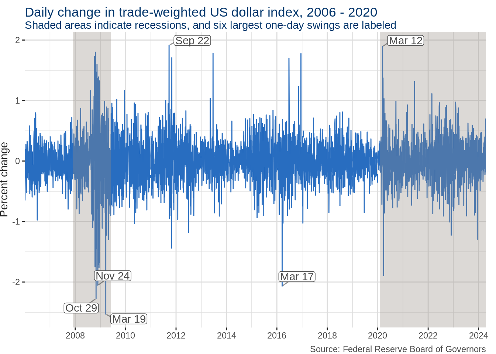

Reserve liquidity facilities shift from advanced economies to emerging markets
analysis
YPFS
political economy
Author
corey
Published
July 1, 2020
This post was originally published on the YPFS Systemic Risk blog
On June 19, the European Central Bank (ECB) joined the central banks of England, Japan, and Switzerland in scaling back the frequency of their US dollar liquidity swaps with the Federal Reserve (Fed). Central bank liquidity swap lines facilitate access to foreign capital during periods of international financial stress. While these bilateral swap operations with the Fed have slowed, the ECB announced on June 25 the establishment of the Eurosystem repo facility for central banks (EUREP). The new facility will complement the ECB’s current bilateral swap lines by allowing for less stable currencies to participate in repurchase agreements. This post summarizes the recent activity on Fed swap lines and documents the shift in currency facilities from those aimed at the sturdiest reserve institutions to those aimed at central banks with smaller stocks of dollars.
Fed swap lines remain successful
Since the Global Financial Crisis (GFC), the Fed has maintained unlimited swap lines with the European Union, England, Japan, Canada, and Switzerland. On March 23, it began offering daily, 7-day tenor swaps on these unlimited lines. This development came on the heels of a March 19 expansion of bilateral agreements detailed by a previous YPFS blogpost: the expanded facility would provide up to $60 billion for the banks of Australia, Brazil, South Korea, Mexico, Singapore, and Sweden, and up to $30 billion for the banks of Denmark, Norway, and New Zealand.
During a dollar liquidity swap, the Fed enters into an agreement with another central bank that maintains an account at the Federal Reserve Bank of New York (FRBNY). The banks agree to perform two actions: first, the Fed’s dollars are exchanged for the foreign bank’s currency at the prevailing exchange rate; second, at some specified date in the near future, the foreign bank’s dollars are re-exchanged for their own currency at the same exchange rate as the original transaction, plus a small interest rate. The FRBNY is authorized by the Fed’s Open Market Committee under Section 14 of the Federal Reserve Act to establish swap lines, and has emphasized the benefits to American households and businesses by ”helping to maintain the flow of credit to U.S. households and businesses by reducing risks to U.S. financial markets caused by financial stresses abroad.”
Since the agreements peg both transactions to the same exchange rate, the Fed bears no risk that turmoil in foreign exchange markets translates to a loss of US dollars. Foreign central banks often use swap lines to get dollars that they can use to provide liquidity to domestic institutions in need of dollars. In 2007, the Fed lent money directly to US branches of European banks in addition to its heavy usage of the swap lines. The upshot of a liquidity swap was that, since the Fed’s swap was with the other central bank, it was not exposed to the risk of default by the downstream borrowing institutions; this risk was borne by the central bank, which determined who it would lend to.
Though financial strains among countries with standing dollar swap lines have thus far been much weaker than during the GFC, the rejuvenated lines were equally effective at quelling turbulent dollar funding markets. Between March 6 and March 23, the US trade-weighted dollar index jumped to an historical high of 126.47, and posted its largest single-day percentage increase since the series was inaugurated in January 2006. With the acceleration of 7-day swaps on March 23, three days later the index subsequently posted its second largest drop since March 2009. It has not fluctuated by more than 1 point since April 7, though the index has remained higher and more volatile than recent, pre-pandemic levels.
Code
library(tidyverse) #plotting, data wranglinglibrary(lubridate) #datestradewt <-fredr(series_id ="DTWEXBGS", units ="pch") #retreive percent change in daily trade-weighted US dollar index using fredrrecessions <-read_csv("start, end2007-12-01, 2009-06-012020-02-01, NA") #add recessions from https://fredhelp.stlouisfed.org/fred/data/understanding-the-data/recession-bars/recessions[nrow(recessions), 2] <-Sys.Date() #update current recession with today's dateggplot(tradewt) +geom_line(aes(date, value), color ="#286dc0", show.legend = F) +#line plot of trade-weighted US dollar indexgeom_rect(data =mutate(filter(recessions, end >=min(tradewt$date)), #only include recessions ending after start of seriesstart =if_else(start <min(tradewt$date), min(tradewt$date), start)), #trim start of overhanging recessionaes(xmin = start, xmax = end, ymin =-Inf, ymax =Inf), #define sides of rectanglefill ="#978d85", #Yale shading coloralpha = .33) +#opacityscale_x_date(expand =c(0,0), date_breaks ="2 years", date_labels ="%Y") + ggrepel::geom_label_repel(aes(date, value, label = datestring), data =mutate(slice_max(tradewt, order_by =abs(value), n =6), datestring =format(date, "%b %d")), min.segment.length =0, label.padding = .1, segment.alpha = .6, show.legend = F, color ="#4a4a4a") +labs(x =NULL, y ="Percent change", title ="Daily change in trade-weighted US dollar index, 2006 - 2020", subtitle ="Shaded areas indicate recessions, and six largest one-day swings are labeled", caption ="Source: Federal Reserve Board of Governors") +theme(plot.title =element_text(color ="#00356b", vjust =-2), plot.subtitle =element_text(color ="#00356b", vjust =-1), plot.caption =element_text(color ="#4a4a4a"), plot.margin =margin(r =10),axis.title =element_text(color ="#222222"), axis.text =element_text(color ="#4a4a4a"), axis.ticks =element_line(color ="#222222"),panel.background =element_rect(fill =NA), panel.grid =element_line(color ="#dddddd"))

The speed and authority with which the Fed provides liquidity for the largest reserve currency market have bolstered the central bank’s reputation. This most recent resurgence of swap lines has led some to assert that the Fed is not only a central bank to the US, but also to the world, offering short-term emergency liquidity when central banks – liquid in their own currency – are strapped for US dollars. As with domestic lender-of-last-resort operations, the transactions have always been initiated by a counterparty, never by the Fed. Although swap agreements are bilateral, the US has never drawn on a currency swap line.
Focus shifts to countries with weaker reserves
The Fed’s deceleration of currency swaps prompted praise for the speed and scale of relief. But the facility left unresolved the plight of weaker, systemically less important currencies. Already burdened by higher interest rates on credit, countries without access to Fed swap lines saw a sharp uptick in the costs of accessing dollar funding markets, a Bank for International Settlements paper published in May found. Access to dollar funding has been exacerbated by capital outflows at rates higher than during the GFC.
In an attempt to provide reserves for dollar-strapped reserve banks, the Fed and ECB have each established repurchasing (repo) facilities for their currencies. The facilities work similarly to currency swap lines, providing short term liquidity and protecting against credit risk by dealing only with central banks. However, these repo facilities lie one step closer to secured loans, requiring foreign central banks to post collateral should they default on loan repurchasing. To protect against exchange rate risk, eligible collateral consists only of sovereign securities denominated in the lender’s currency. For example, the Fed’s Foreign and International Monetary Authorities (FIMA) facility — detailed in a previous YPFS blogpost — accepts US Treasury securities of any maturity, while the ECB’s EUREP accepts euro-denominated debt from any of its constituent states as well as the central bank itself.
These repo agreements allow foreign central banks to avoid dumping large amounts of sovereign bonds into illiquid markets, ensuring value for both the Fed and the foreign bank in need. But the facilities can be more limited than the swap lines due to shorter maturities and higher interest rates. The FIMA’s repo facility only offers overnight maturities. Though such maturities can be rolled over, the repo agreements contrast sharply in this regard with the swap lines, which offer up to 84-day maturities.
Additionally, pricing is slightly steeper in FIMA and EUREP facilities. Where Fed central bank liquidity swaps add 25 basis points to the overnight index swap (OIS), FIMA adds 25 basis points to the Interest Rate on Excess Reserves (IOER). Currently the benchmark US overnight rate, the Federal Funds rate, stands at 0.05%, with the IOER at 0.10%. These prices potentially mean that liquidity will be cheaper for emerging markets than swap lines were for Singapore, which paid 1.09% for a March swap, but more expensive than recent swaps with the Fed’s standing accounts, which have carried rates around 0.33%.
The ECB has yet to announce pricing for its facility, which will run until June 2021, but Turkey has been mentioned as a potential applicant. Bloomberg reported that the nation had sought talks with the Group of 20 nations for its inclusion in bilateral swap agreements. For emerging markets, the International Monetary Fund has also been very active in approving emergency fund disbursement and stand-by facilities, and has introduced the new, “swap-like” Short-term Liquidity Line, and may be on track for support more given its still-large reserves.